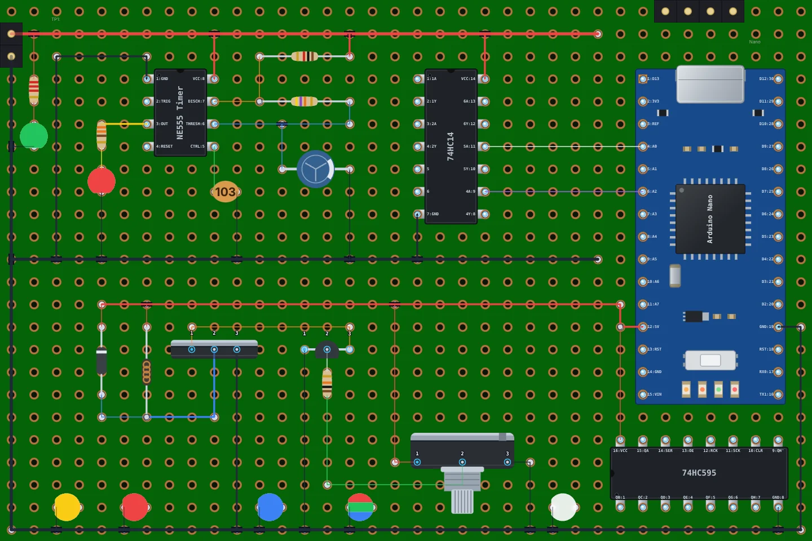
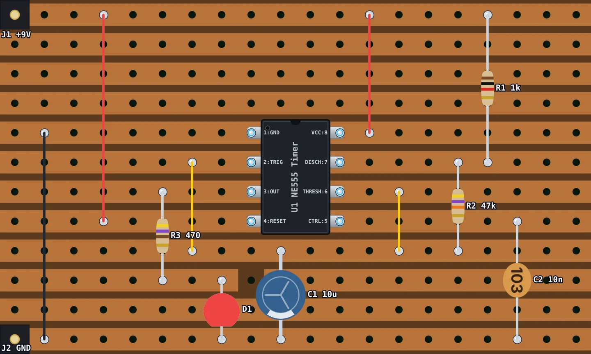
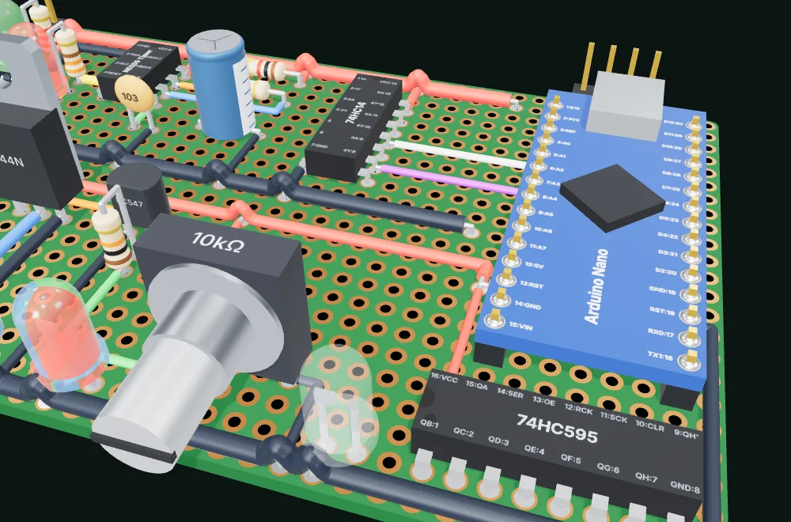

Quick start: your first board in five steps
Open the designer. A small perfboard is ready to use, and your work is saved in the browser as you go, so there's nothing to set up first.
-
Pick the board
The card over the empty board says what it's on, such as Perfboard, 14 × 20 holes. Click Change to pick Perfboard or Stripboard and a size, either one of the sizes boards are sold in or the number of holes across and down. A new project (File › New Project…) asks the same when you start it. Then click Start from scratch, or Open an example to look around a finished 555 blinker first, or Design it with AI to have an AI assistant lay the board out for you (see below).
-
Place the parts
Search the Components list (press /), click a part, then click the board where it goes. A resistor or LED takes two clicks: one hole for each lead.
-
Wire it up
Drag from the pin where a wire starts to the hole it should end in: it bends once, as an L. To route it your own way, press W for the wire tool, click the start, the empty holes it bends at, and the pin it ends on.
-
Check the nets
The Nets panel on the right lists which pins are connected. Click a net to light it up on the board, and look out for pins left unconnected.
-
Share or save it
Click Share to copy a link to the board, or use the File menu to save a project file or download a PNG or SVG picture.
The editor at a glance
The editor has four areas:
- Header: the File menu (new, open, import, save, share, download), the View menu (fullscreen, 3D view, show or hide the side panels), the name of the open project (click it to see all your projects), and the Share and 3D View buttons.
- Left sidebar: Tools (Select, Eraser, Note, and Cut on a stripboard), Board type and size, the Wire and Solder Path tools with the wire colors and thicknesses, and the Components library.
- Board: the hole grid you design on. The toolbar above it starts with a badge that tells you what the next click will do; while you are placing a part it also has a ✕ to cancel, and a rotate button for parts that turn. Then come Undo and Redo, zoom and Fit, Labels and Focus. When something is selected, a bar along the bottom of the board shows what you can do to it. The bar under the board shows the note or value of whatever you point at.
- Right sidebar: the live Nets panel and the list of keyboard shortcuts.
Tip: the badge above the board always says what the current tool expects, such as "Click start pad" or "Click end pad". If you're unsure what a click will do, read it, and press Esc to back out.
Set up the board: perfboard or stripboard, any size
A perfboard has a separate copper pad around every hole, so nothing is connected until you wire it. A stripboard (often sold as Veroboard) has copper strips running along every row or column, so every hole on a strip is already connected. Pick the type in the Board panel; you can switch at any time and your parts and wires stay where they are.
Board size
Holes are 2.54 mm (0.1 inch) apart, the standard pitch for through-hole parts. Type the number of holes across (W) and down (H) to match the board on your bench and click Resize, or click a preset such as 5x7 or 7x9 (in centimetres, the sizes boards are sold in). While the board is still empty, the card over it does the same: click Change on it.
Like a real board, the edge is printed with each column's number (from 1) and each row's letter (from A), so every hole has a name such as C4. A selected pad shows its name, which makes it easy to find the same hole on the board in your hand.
Resizing keeps every part and wire that still fits. If making the board smaller would cut something off, the editor asks first, and a resize can't be undone.
Place components
The Components list holds the whole part library in categories: passives (resistors, potentiometers, capacitors, crystals, fuses, inductors), semiconductors (LEDs, diodes, transistors, MOSFETs), ICs (timers, logic, microcontrollers, op amps, regulators, drivers, optocouplers), modules and dev boards (Arduino Nano, ESP32, Raspberry Pi Pico, Wemos D1 Mini), connectors, switches, displays, sensors, batteries, relays and buzzers.
Press / to jump to the search box and type a name, a value or a part number, such as "555", "header" or "electrolytic". Parts you've placed recently are listed under Recently used… at the top, so you can grab them again quickly.
Click a part to pick it up. How you put it on the board depends on the part:
Two-lead parts
Resistors, capacitors, LEDs, diodes and inductors bend to fit. Click the hole for the first lead, then the hole for the second; the body is drawn between them.
Fixed-footprint parts
Transistors, pots, switches, connectors and displays have fixed pins. Press R to turn the part, then click the hole to drop it. Header pins and female headers take two clicks: two opposite corners of the block.
ICs and dev boards
DIP chips and dual-row modules are placed with one click, with pin 1 at the notch. Press R before placing, or later with the chip selected, to rotate it.
Once it's placed, the editor goes back to Select with the new part selected, so its value or rotation is one click away. To place several of the same part in a row, hold Shift as you click: the part stays picked up until you click without Shift, press Esc or click Select. Every part gets a reference designator automatically: R1, R2 for resistors, C1 for capacitors, D1 for diodes and LEDs, U1 for chips, J1 for connectors, and so on.

Values, colors and labels
Select a part and click Value in the bar along the bottom of the board (or
right-click it and choose Set Value) to give a resistor its resistance, a
capacitor its capacitance, and so on. Pick one of the common values offered, or type your
own: values understand the usual prefixes, 4k7, 4.7k,
100n, 10u. The drawing
follows the value: a resistor gets the right color bands, and a ceramic capacitor the
three-digit code printed on it (such as 104 for 100 nF).
For an LED, Change Color picks red, green, blue, yellow or RGB. Click Labels above the board to show every part's name and value right on the board (for example "R1 10k"), handy when you print the layout to solder from.
Custom parts
If a chip, transistor or breakout board isn't in the library, make it: click Custom part… at the top of the Components list and pick what kind of part it is, an IC chip, a dev board, a module with pins anywhere, or a transistor or other package. Its editor opens; Back takes you to the choice again.
IC chips and dev boards
For a part with two rows of pins, like a DIP chip or an ESP32 board, set:
- Name, such as "ESP8266-01" or "LM2596 module".
- Type: an IC, listed under ICs › Custom, or a module, listed under Modules › Custom.
- Body width in holes, including both pin rows, and the number of pins per side.
- A label for every pin, numbered from pin 1 at the notch, like a datasheet.
Modules, with pins anywhere
For a sensor breakout, a relay board, a display or a connector with an odd layout, draw the part itself:
- Name, such as "HC-SR04", and the ref letters its copies are numbered with (M makes M1, M2…).
- Its width and height in holes, and a board colour.
- Its pins: click a hole to add a pin there, click it again to take it away. Pins are numbered in the order you click them, and pin 1 is the hole you place the module by. Top row, Bottom row, Left column and Right column add a whole edge at once.
- A name for each pin (optional), such as VCC, TRIG, ECHO, GND. Named pins name the nets they're on.
Save Module lists it under Modules › Custom and picks it up, ready to click onto the board; rotate it with R like any part.
A transistor or other part in a known package
Many missing parts come in a package the library already has: a BC337 or a 2N3906 is a TO-92 transistor, an IRLZ44N or an LM7812 a TO-220, they just have their own pinout. Pick:
- The package: any fixed-pin part in the library, such as Transistor (TO-92) or MOSFET (TO-220).
- Its name, such as "BC337", and the ref letters (Q for a transistor).
- A name for each pin, in pin order: pin 1 is the hole you place it by. For a transistor, the buttons above the names fill in the usual pinouts (E B C, C B E, G D S…), so check the part's datasheet and click the one it has.
The board below the names shows the part as it will be placed. Save Part lists it next to its package (a TO-92 under Semiconductors › Transistors) and picks it up, ready to click onto the board. It's drawn, and shown in the 3D view, as its package, with your pin names.
Click ✎ beside a custom part in the list to change it, or ✕ to delete it. Parts already on a board keep the way they were placed: custom parts are kept in your browser and travel with every project and share link that uses them, so a board opens with its parts intact on any computer.
To use your custom parts in another browser, File › Export Custom Parts… downloads them all as one file, and File › Import Custom Parts… adds the ones you don't have yet.
Route wires
The quickest way: drag from one hole to another. It works with the Select tool and the wire tool, from an empty hole or a part's pin. The wire routes itself as an L with one bend, going first the way you moved first (across, then down; or down, then across), and straight when the two holes line up. Press / while dragging to flip the L, or hold Shift for a straight wire (with the Select tool, press Shift once you've started dragging: held as you press, it draws a selection box instead). It shows dashed as you drag and is placed when you let go on a different hole; let go on the hole you started from, or press Esc, to drop it. You can also right-click a hole and choose Start Wire Here. On a phone, dragging pans the board instead: see On a phone or tablet.
To route a wire your own way, click Wire Tool or press W, then click the hole where the wire starts and each hole on its way:
- A click on an empty hole bends the wire there. A bend is just a bend in the wire, not a joint: it connects nothing.
- A click on a hole with a pin or a wire in it ends the wire there and connects it. The next wire starts from that hole, so a run of connections costs one click per hole.
- To end a wire on an empty hole, click its last hole again or press Enter.
- Esc takes back the last bend; with no bend left, it ends the run. Clicking the start hole again also ends it.
- On a stripboard every hole is on a strip, so a click always connects; drag for an L.
A ring on the hole under the pointer means a click there connects the wire.
- Pick a color before you draw (red for power and black for ground keeps a board readable), or add your own with the + button. Every color a wire on the board already has shows up there too, so it's easy to match.
- Choose Thin, Normal or Thick wire.
- Start or end a wire at another wire's free end (a hole with nothing else in it), in the same color and thickness, and it carries that wire on: the two become one wire, bending where they met.
- Where one wire ends on another, the two are joined, whichever you draw first: the wire running past is split at that hole, and a solder dot marks the joint. Wires that only cross each other stay apart.
- To recolor a wire, select it and click a color.
Bend a wire you've drawn
Click a wire with the Select tool and it shows handles: a white one on each bend and a small dot in the middle of each straight stretch.
- Drag the wire anywhere along it (or by its middle dot) to pull out a new bend. It follows the pointer from hole to hole.
- Drag a bend to move it. Let go of it in line with the holes either side and it's gone.
- Drag an end to move that end to another hole. It connects to whatever is there, like a new wire would.
- Double-click a bend to take it out, or click Straighten in the bar along the bottom to take them all out.
- Esc while dragging puts the wire back as it was, and Ctrl+Z undoes a change.
Wires on the solder side
Select a wire and click To solder side in the bar (or right-click and choose Move to Solder Side) to put it on the back of the board. It still connects the holes at its ends, but it no longer crosses the wires on top, so it's a way to move a long run out of a crowded board. It shows faded in the normal view, and at full strength in the solder side view. Select it and choose To top to bring it back.
How wires connect
Wires are insulated jumpers, like the ones you solder on the back of a board. A wire only connects the holes at its ends. Where it runs across another wire, or over a hole that holds a pin, it passes over without touching: the editor draws a dark edge along it there. Where three or more things meet in one hole, a solder dot marks the joint. To connect two wires, end them in the same hole, or end one on a hole the other passes over: whichever you draw last, the wire running past is split there and joined.
Every hole you'll solder, one holding a pin, a lead or a wire's end, shows silver solder inside its copper ring, so you can see at a glance where the joints are. A hole a wire only passes over stays empty. To see the joints from the side you solder on, use the solder side view.
Solder paths
Instead of a jumper wire, you can join neighbouring holes the way many people do on the copper side: with a solder path, a trail of solder bridging pad to pad. Click Solder Path next to the Wire Tool, or press S, and draw it exactly like a wire: click the holes it runs through, or drag from one hole to another. The editor draws it as silver solder with a bead on each hole, under the jumper wires.
- A solder path connects every hole it runs over: its ends, its bends and each hole along the way, plus any other solder path it touches. Run it only over holes that should be joined.
- It has no color or thickness. Select, bend, erase and undo work on it the same as on a wire.
- A jumper wire crossing a solder path doesn't touch it: the wire is on the component side, the solder on the copper side.
- On a stripboard, a solder path can't join a cut hole: there's no copper there.
- The solder side view and the 3D view's Bottom show it where you'll make it, under the board.
Select, move and delete
- Select (the default tool): click a part, wire or hole to select it. Drag a part to move it to new holes.
- A selected item gets a bar along the bottom of the board with what you can do to it: Rotate a chip or other part that turns, Turn round an LED, diode or electrolytic capacitor end to end, change the Color of a wire or LED, Straighten a bent wire, set a part's Value, add a Note to a hole, and Delete. Right-click anything for the same actions as a menu.
- Delete removes the selected part or wire.
- Select several at once: hold Shift and click parts and wires to add them to the selection (Shift-click one again to take it out), or hold Shift and drag a box: everything that lies wholly inside it is selected. Ctrl+A selects every part and wire. Or click Select more in the bar along the bottom of the board, and plain clicks and drags do the same until you click it again.
- Drag any of the selected parts, or one of the selected wires, and they all move together; wires you didn't select stay where they are. A click on one of them, without dragging, selects just that one. Delete removes them all, and Undo brings them all back in one go.
- Copy and paste: Ctrl+C copies the selected parts and wires, Ctrl+X cuts them, and Ctrl+V pastes them with their top-left corner at the hole under the pointer, into this project or another one. Duplicate in the bar (or Ctrl+D) puts a copy beside the original, where there's room. Copies are new parts, numbered on from the board's own (a copy of R3 might be R7), with the same values.
- Eraser: click a part or wire to remove it, or a hole to clear its note.
- Note: click a hole to write a note on it, such as "to 9V battery" or "solder last". Notes show in the bar below the board when you point at the hole. With a hole selected, D adds a note and Shift+D removes it.
- Undo and Redo with Ctrl+Z and Ctrl+Y, or the arrow buttons above the board. They're greyed out when there's nothing to undo or redo.
On a phone or tablet
On a small or touch screen the board fills the screen. A toolbar along the bottom holds Select, Wire, Solder, the round + button to add a part, Nets and More. Undo and Redo float over the board's top left corner, Fit and Labels over its top right.
- + slides up the Components library. Pick a part and it slides away again, ready for you to tap the board.
- While you place a part or a wire, a hint over the board says what to tap next, such as "Tap start pad", with a button to cancel and, for chips, one to rotate the part first.
- Tap a part, wire or hole to select it. A bar along the bottom shows what you can do to it: wire, solder, rotate, turn round, color, value, note, duplicate and delete. Pressing and holding it opens the same actions as a menu.
- To select several parts and wires, tap Select more in that bar, then tap each one you want (tap one again to take it out). Tap Select more again when you're done. Drag any of them with one finger and they all move.
- Drag with one finger to pan. In Select mode, drag a part's body to move it, or a selected wire's handles to bend it, straight away or after holding your finger still (double-tap a bend to take it out).
- To draw a wire, press and hold a hole or a pin and choose Start Wire Here, then tap the holes it bends at and the one it goes to. Or keep your finger down after the menu appears and drag to that hole: the wire bends once, as an L, and a tap with a second finger flips it. Tapping a hole also gives a Wire button in the bar along the bottom.
- To draw a solder path, tap Solder in the bottom toolbar, then tap the holes it runs through; tap the last one again to end it. Pressing and holding a hole also offers Start Solder Path Here, and a selected hole has a Solder button.
- Pinch with two fingers to zoom, and drag with two fingers to pan with any tool.
- More slides up the other tools (Eraser, Note, Cut), the board type and size, and the wire colors and thicknesses.
- Nets slides up the Nets panel.
Stripboard (Veroboard) layouts and strip cuts
Switch the board to Stripboard and choose Horizontal or Vertical strips. Every hole along a strip is connected, so parts on the same strip are joined without a wire, and the Nets panel counts the strips as connections.
To separate two parts on one strip, cut it: pick the Cut tool (it appears in Tools on a stripboard) and click the hole where the strip should break. A cut hole connects to nothing. Click it again to mend the strip. The classic case is a DIP chip across horizontal strips: cut the strips under the chip's body so pin 1 isn't joined to pin 8, and so on.

Cuts are saved with the project and drawn on the copper side of the 3D view. If you switch back to perfboard, the cuts are kept, hidden, and come back when you switch to stripboard again.
Check connections with the Nets panel
A net is a set of pins that are electrically connected. The Nets panel on the right works them out live from your wires, shared holes and, on a stripboard, the strips and cuts. Each net is named from its pins where it can be, for example GND, VCC or OUT, with a ground or supply symbol before a rail. Each pin shows its part's icon from the parts list.
- Detailed (the switch at the top of the panel) gives each pin a line saying what it is: D1 LED · Red, cathode (K), or U1 NE555 Timer, pin 8 · VCC. Short packs them into chips, "U1.8 VCC", "R1.1" or "D1.K", for a long list; hover a chip for the same words.
- Click a net to highlight its holes and wires on the board; click it again to turn the highlight off.
- Looks backwards lists polarized parts that are the wrong way round between the supply rails: an LED or electrolytic capacitor with its anode or + on GND or its cathode or − on VCC, or a diode straight across the supply. Click one to select it, or Turn round to swap its leads. The rails are pins named like VCC, GND or 5V, a battery holder's + and −, and holes with a note such as +9V or GND: if your power comes in on a header or terminal block, give its holes a note so the check can see the rails. A part between two signals isn't judged.
- Not connected lists pins wired to nothing, the most common slip on a real board.
- Connecting no pins lists wires that don't reach any part.
Before you solder: go through your schematic net by net and check each one in the panel. A net named like "GND/VCC" means two supply rails are shorted, often by an uncut strip. (One named like "5V/VCC" is just one rail with two names.)
Perfboard Designer checks how the board is wired, not how the circuit behaves: it doesn't simulate your circuit.
Solder side view
When it's time to solder, click Solder side above the board (or press B). The board turns over: you see it from below, mirrored the way it looks in your hand with the copper side up. The parts and wires show faintly through it for bearings, and every hole you need to solder gets a bright solder blob: each pin and lead, each end of a wire, and every hole a solder path covers. Solder paths show at full strength, since this is the side you make them on.
- A yellow square marks pin 1 of every chip and other part with more than two pins, so nothing goes in backwards.
- Each part's name sits by its joints, so you can tell which joint is which.
- On a stripboard, the strips are shown at full strength, and every place to cut a strip is marked with a red ✕.
- The badge above the board counts the joints to solder.
- The view is only for looking at: you can pan and zoom, but not change the board. Click Solder side again, or pick any tool, to go back.
- Download Image and Download SVG save it as shown, ready to print and take to the bench.
Required connections: check the board against your schematic
Optionally, list the nets your circuit should have, and the editor ticks each one off as you wire it. Open Required connections at the top of the Nets panel:
- Add a net, then click the pins it joins on the board (click one again to take it out) and press Enter or Save net. Esc cancels. Place the parts first: a net is made of their pins.
- Use current wiring copies every net the board has now, so any later change that breaks one shows up.
- Each net shows a tick once the board joins all its pins, or To wire until then. Click a net to light it up on the board; the pencil changes its pins and the bin deletes it.
- Problems are listed above the nets: a wire joining two nets that should be apart, or a required part that's gone from the board (Forget it stops requiring it).
The list is saved in the project file and share links, editing the board never changes it, and Ctrl+Z undoes changes to it. An AI agent can write one too. Pins left out of every net aren't checked, and this checks connectivity, not whether the circuit will operate. Remove list takes it away.
Preview the board in 3D
Click 3D View to see your layout as a 3D model of the finished board: resistors with their color bands, chips with labeled pins, LEDs, capacitors, connectors and every jumper wire, arched over the wires it crosses. Every soldered hole shows its solder, on top and as a joint underneath.
- Drag to orbit and scroll to zoom. On a phone, drag with one finger to turn it, pinch to zoom and drag with two fingers to pan.
- The switch along the bottom jumps to a preset view: Angled, Top or Bottom. Bottom shows the copper side with its strips, cuts and solder joints.
- The camera button at the top saves a picture of the render; the folder opens another project file; ✕ (or Esc) closes the view.

The 3D view needs WebGL. If it doesn't open, turn on hardware acceleration in your browser's settings or try another browser.
Save, share and export
Projects in your browser
Every board is a project, saved automatically in your browser as you edit. Click the project name in the header, or File › Open Project…, to see them all with thumbnails, and open, rename, duplicate or delete them. File › New Project… starts a fresh board: name it, pick perfboard or stripboard and a size, with a picture of the board as you choose, and click Create project. The next new project starts from the same choice.
Keep a backup: browser storage is cleared if you clear your site data. Use File › Save Project to File… to download a project file, and Import Project from File… to open it again on any computer.
Share links
Share (or File › Share Link…) makes a link that carries the whole board inside it. Whoever opens it gets their own copy as a new project; your board isn't changed, and nothing is uploaded. The link is a snapshot: after more edits, share a new one.
For a link short enough for a forum post or a chat, click Make Short
Link and give it a name, such as led-blinker. That stores a copy
of the board on Perfboard Designer's server under that name. Anyone with the link can open
it, the stored copy never changes, and it's deleted after a year unopened.
Images for printing and documentation
File › Download Image (or P) saves the board as a PNG, and Download SVG as a sharp vector image you can scale or print at any size. Turn on Labels first to include part names and values, or switch to the solder side to save that instead.
Component list
File › Component List… shows every part on the board in a table: its name (R1, U1…), what it is, its value, its type and the hole its pin 1 is in, such as B12. Click a part to find it on the board. Grouped by value turns the table into a shopping list, with how many of each part and value you need, smallest value first. Download CSV saves the table as shown, ready for Excel, Google Sheets or a supplier's order form.
Design boards with an AI assistant
Perfboard Designer has a free MCP server, so Claude, ChatGPT, Cursor and other AI assistants can lay out boards for you. Describe the circuit, such as "a 555 LED blinker on a small perfboard", and the assistant picks the parts, places them, routes the wires, checks every connection and gives you a link that opens the board here, ready to change. It can also read a board you share with it and edit it.
Keyboard shortcuts
| Keys | What it does |
|---|---|
| / | Search components |
| W | Turn the wire tool on or off |
| S | Turn the solder path tool on or off |
| R | Rotate the part you're placing, or the selected part |
| Esc | Take back a wire's last bend, end a wire run, put down the part you're placing, or clear the selection |
| Enter | End the wire you're drawing at its last bend, or save the required net you're picking |
| / while dragging a wire | Flip its L |
| Shift while dragging a wire | Draw it straight (with the Select tool, press it once the wire is on its way: held as you press, it draws a selection box) |
| Delete | Delete the selected parts and wires |
| Shift + click | Add a part or wire to the selection, or take it out |
| Shift + drag | Select everything inside a box |
| Ctrl+A | Select every part and wire |
| Ctrl+C / Ctrl+X | Copy or cut the selected parts and wires |
| Ctrl+V | Paste at the hole under the pointer |
| Ctrl+D | Duplicate the selected parts and wires |
| C | Change the color of the selected wire |
| D | Add a note to the selected hole |
| Shift+D | Remove the selected hole's note |
| M | Move the selected hole's note to the hole under the pointer |
| Ctrl+Z | Undo |
| Ctrl+Y | Redo |
| P | Download the board as a PNG image |
| B | Show or hide the solder side |
| Space + drag | Pan the board with any tool |
The same list is always in the editor's right sidebar.
Tips for a clean perfboard layout
- Start with the big parts. Place chips, dev boards and connectors first, leaving room around them, then fit the small parts in between.
- Plan the power rails. Run power and ground along the board's edges or along two strips, so every part can reach them with a short wire.
- Put connectors at the edge, where cables can reach them without crossing the board.
- Leave a spare row or column around the edge for mounting holes and last-minute changes.
- Use a color code for wires: red for power, black for ground, and one color per signal you'll want to trace later.
- Keep wires short and straight, and avoid running wires under parts, where you can't reach them with the iron.
- On stripboard, cut under every DIP chip and check the Nets panel for shorts before you solder.
- Mind polarity: the Nets panel names an LED's or diode's leads A and K and a capacitor's + and −, so check them against your schematic.
- Print it. Download the image with labels on and keep it next to the board while you solder.
Frequently asked questions
How do I cut a strip on a stripboard?
Switch the board to Stripboard, pick the Cut tool in the Tools panel and click the hole where the strip should break. Click a cut hole again to mend it.
How do I rotate a component?
Press R. It turns the part you are about to place, or the selected part on the board. You can also right-click a part and choose Rotate Component.
Why are two wires that cross not connected?
Wires are insulated jumpers: a wire only connects the holes at its two ends. Where it runs over another wire or a hole it goes over it without joining. To connect, end the wires in the same hole.
Can I draw solder bridges instead of jumper wires?
Yes: use the Solder Path tool (press S). A solder path is a trail of solder on the copper side, and unlike a wire it connects every hole it runs over.
Does it work on a phone?
Yes. On a phone or tablet the board fills the screen, with the tools on a toolbar along the bottom. Tap + to add a part, tap the board to place it, drag to pan and pinch to zoom. Tap a part to select it, and a bar shows what you can do to it.
Where are my projects saved?
In your own browser, automatically as you edit. Use File › Save Project to File to keep a copy on disk, or Share Link to send the board to someone.
Can I share a board without an account?
Yes. File › Share Link makes a link that carries the whole board. Whoever opens it gets their own copy as a new project. No account is needed.